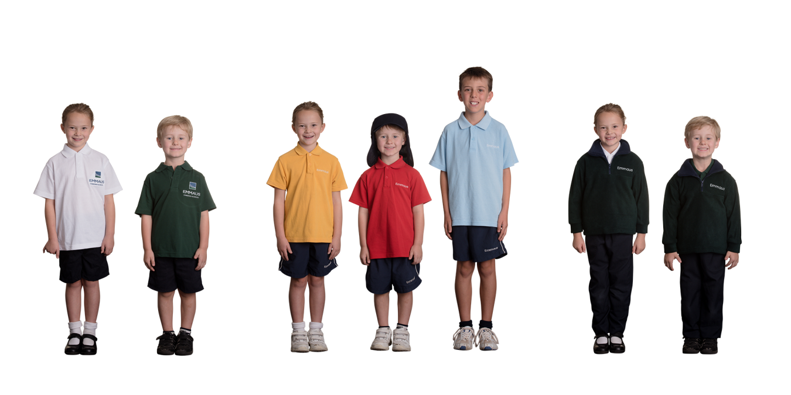
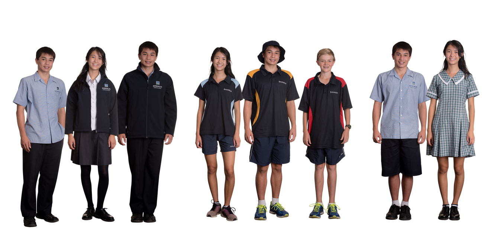

Uniforms
Parents must agree to the Uniform Policy at the time of Enrolment
The Emmaus Christian School Uniform Policy has been developed by our Uniform Committee. Preschool also has uniform items available – a blue t-shirt and windcheater – which are required to be worn for excursions, purely for ease of recognising members of the group.
The value of enforcing a uniform policy for Primary and Secondary school is in order to:
•Maintain a neat appearance among students

•Make economic distinctions between students less noticeable (designer caps, shoes, jackets and jeans can be a status symbols)
•Make a clearer distinction between recreational/home activities and work/school activities
•Remind the children that they are part of a cooperative community and help create a community identity
•Help identify students from Emmaus Christian School when in public for safety reasons
•Encourage a sense of care and pride regarding personal appearance among students.
 Research indicates that students take greater pride in their school if the school requires a uniform,and that academic standards are also improved. This may be due to a heightened attention to detail in student attitudes. We have attempted to have uniform items designed to interchange well between seasons and siblings of any gender. (Some Secondary items are gender specific.) All Primary & Secondary Uniform items are available only through the Emmaus Uniform Store—apart from plain white, navy or bottle green socks, school shoes and winter jacket/parkers. Substituting Emmaus uniform with ’similar’ styles or colours is not an option.
What happens if a student is out of uniform?
Primary and Secondary students are given an ‘Out of Uniform’ note to take home to be signed and returned to school the following school day. There is a consequence for continuing to be out of uniform. Students may be required to sit outside the staffroom or do a chore during a recess or lunch break. Three out of unifrom slips in Secondary school will result in an after school detention.